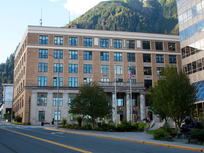
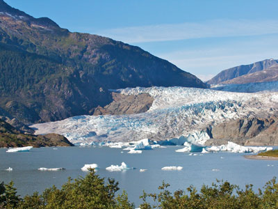
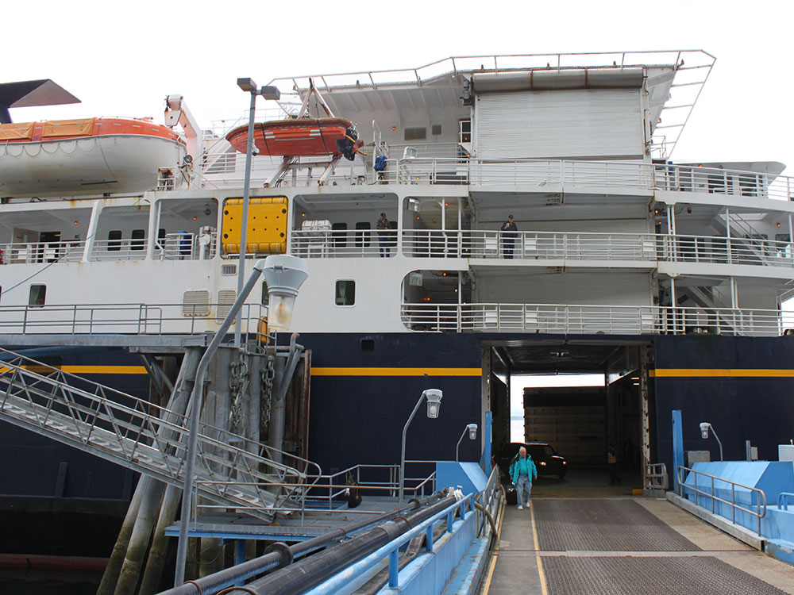
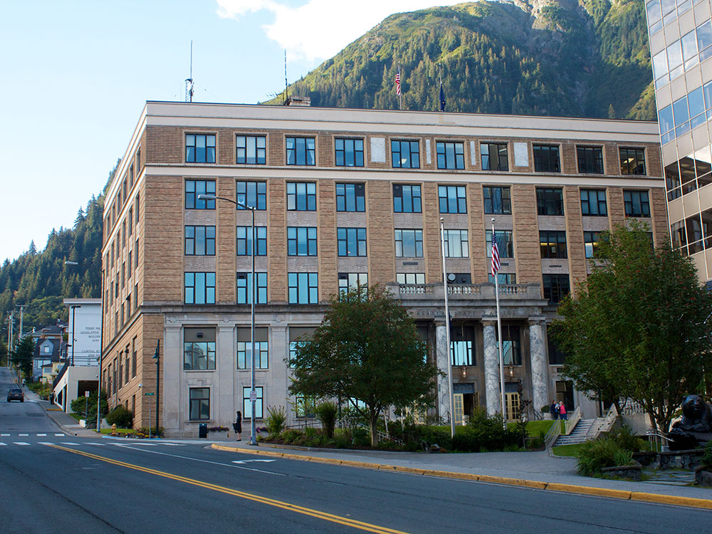
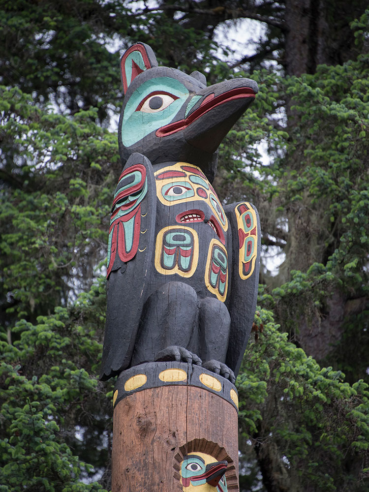
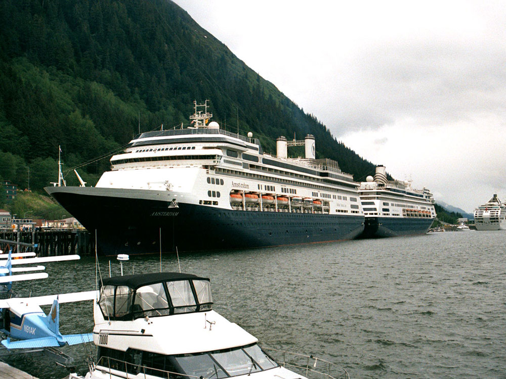
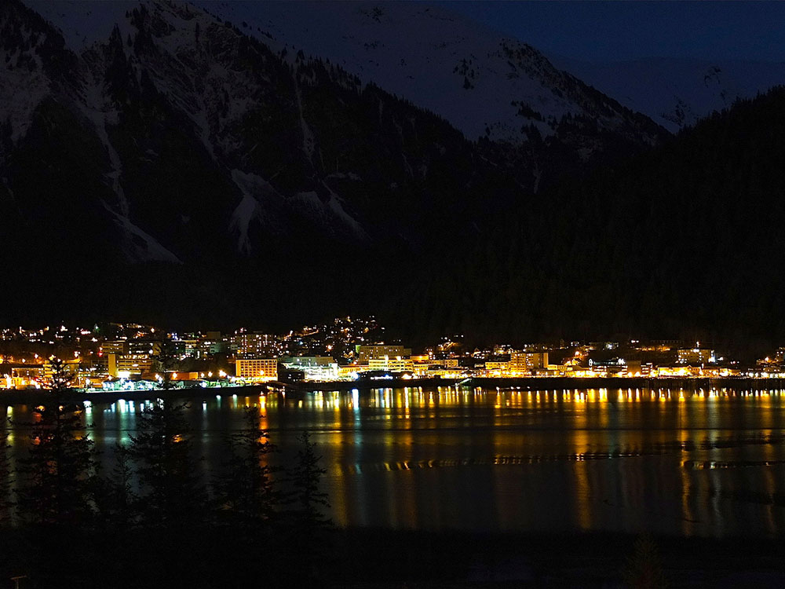
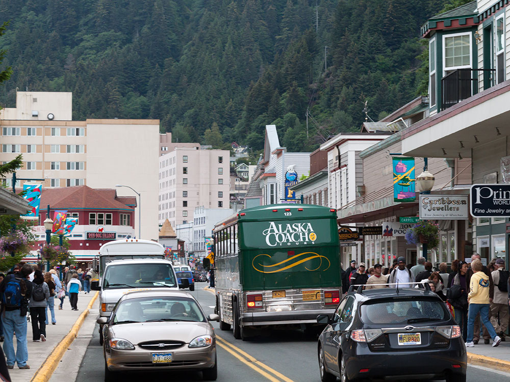
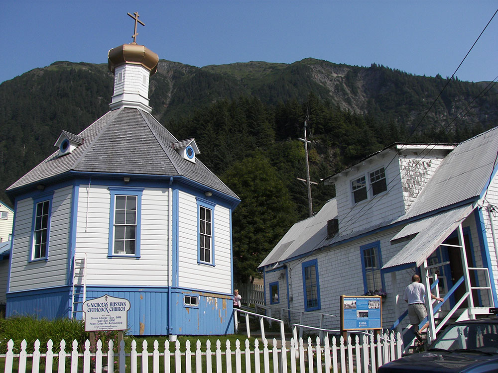

Rugged coastal city surrounded by towering mountains, glaciers, and dense rainforest that serves as a gateway to remote wilderness, wildlife viewing, and maritime adventures.
General Information
How to Get There
From Seattle (900+ mi): Fly directly into Juneau International Airport or take a ferry through the coastal marine highway system connecting ports along the scenic southeastern waterways.
Overview
Juneau is the capital of Alaska, on the Gastineau Channel in the Southeast panhandle, and it is the only state capital in the United States that cannot be reached by road, accessible only by air or sea. The city is squeezed between steep mountains and the water, with the 1,500-square-mile Juneau Icefield behind it and the Mendenhall Glacier within the city limits. It has a colorful gold rush history, a lively cruise ship port, and some of the best whale watching in Alaska.
Visitors come to Juneau for the Mendenhall Glacier, for whale watching and wildlife cruises, and for the Mount Roberts Tramway above downtown. They also come for the Alaska State Capitol, for flightseeing and dog sledding on the icefield, for salmon fishing, and as a gateway to Admiralty Island, Glacier Bay, and Misty Fjords.
History
The Tlingit people, the Auke and Taku, have lived in the area for thousands of years. In 1880, prospectors Joe Juneau and Richard Harris, guided by Chief Kowee, found gold in the Gastineau Channel, and the town that grew up around the discovery was named for Juneau. The Alaska-Juneau Mine and the Treadwell Mine on Douglas Island were among the largest gold mines in the world until the 1940s, and Juneau became the territorial capital in 1906, replacing Sitka. After statehood in 1959, there were several attempts to move the capital, but Juneau remains the seat of government.
Sightseeing and Popular Landmarks
The Mendenhall Glacier, 13 miles from downtown, has a visitor center, trails, and views of a retreating blue glacier and Nugget Falls. Downtown has the Alaska State Capitol, the Russian Orthodox St. Nicholas Church from 1894, the Alaska State Museum, and the Mount Roberts Tramway, which rises 1,800 feet to an alpine area with views of the channel. The Sons of Norway Hall and the Juneau-Douglas City Museum are other sights.
Culture and Museums
The Alaska State Museum has exhibits on Alaska Native cultures, the Russian colonial period, and the gold rush, and the Sealaska Heritage Institute celebrates Tlingit, Haida, and Tsimshian art. The Juneau-Douglas City Museum covers the city's mining history, and the Alaska Folk Festival in April is a favorite. The Glacier Gardens Rainforest Adventure and the Last Chance Mining Museum are other attractions.
Parks
Juneau is surrounded by the Tongass National Forest, the largest national forest in the country, and has many trails, including the Perseverance Trail and the Mount Juneau and Mount Roberts hikes. Mendenhall Glacier Recreation Area has salmon spawning in summer, with black bears, and Eaglecrest has skiing in winter. Admiralty Island is known for having the highest density of brown bears in the world, and Glacier Bay and Misty Fjords are reached by plane or boat.
Seasons and Weather
Juneau has a temperate rainforest climate. Summers are cool, with highs in the upper 50s and low 60s°F, and winters are mild for Alaska, with highs in the 30s°F and about 90 inches of snow, and rain falls about 220 days a year. Summer is the busiest season, with cruise ships, and visitors should bring rain gear.
Things to Do
Experience Alaska's Capital City
Juneau, Alaska's capital city, is surrounded by mountains, glaciers, rainforests, and the waters of the Inside Passage. Accessible primarily by air or sea, Juneau combines spectacular wilderness with fascinating history, Native culture, outdoor adventure, and some of Alaska's most famous natural attractions.
Visit the Mendenhall Glacier
The Mendenhall Glacier is Juneau's most famous attraction. Located within the Tongass National Forest, the glacier stretches from the Juneau Icefield and can be viewed from multiple overlooks and trails. Visitors can explore the Mendenhall Glacier Visitor Center, observe icebergs floating in Mendenhall Lake, and learn about glaciology and climate science through exhibits and ranger programs.
See Wildlife on a Whale-Watching Tour
Juneau is one of the best places in Alaska for whale watching. Guided excursions frequently encounter humpback whales, orcas, sea lions, harbor seals, porpoises, and bald eagles. The nutrient-rich waters of the Inside Passage support abundant marine life throughout the summer season.
Ride the Goldbelt Tram
The Goldbelt Tram carries visitors from the waterfront nearly 1,800 feet up Mount Roberts. At the summit, visitors can enjoy panoramic views of Juneau, Gastineau Channel, Douglas Island, and surrounding mountain ranges while accessing hiking trails, cultural exhibits, and dining facilities.
Explore Alaska's Gold Rush History
Downtown Juneau features numerous historic buildings dating to the gold rush era. Visitors can explore museums, historic districts, old mining sites, and interpretive attractions that tell the story of the prospectors and entrepreneurs who helped establish the city in the late nineteenth century.
Visit the Alaska State Museum
The Alaska State Museum showcases the history, cultures, and natural heritage of Alaska. Exhibits feature Alaska Native artifacts, Russian colonial history, gold rush collections, artwork, and displays covering the development of the state from prehistoric times to the modern era.
Explore Tongass National Forest
Juneau sits within the Tongass National Forest, the largest national forest in the United States. Visitors can explore temperate rainforests, waterfalls, mountains, lakes, and wildlife habitats through a network of trails and scenic recreation areas surrounding the city.
Take a Glacier Flightseeing Tour
Flightseeing excursions provide breathtaking views of the Juneau Icefield, glaciers, mountain peaks, and remote wilderness areas. Many tours also include glacier landings, allowing visitors to walk on ancient ice formations that are otherwise inaccessible.
Enjoy Kayaking and Water Adventures
The protected waters surrounding Juneau offer excellent opportunities for sea kayaking, canoeing, and boat tours. Visitors can paddle among forested shorelines while watching for marine wildlife and enjoying views of glaciers and snow-capped mountains.
Top Trails
West Glacier Trail
Length: Approximately 4 miles round trip
Elevation Gain: Approximately 500 feet
Difficulty: Moderate
One of Juneau's most popular hikes, this trail leads to viewpoints near Mendenhall Glacier and offers excellent opportunities to experience the area's rainforest environment, glacial landscapes, and scenic overlooks.
Mount Roberts Trail
Length: Approximately 4.5 miles one way
Elevation Gain: Approximately 3,800 feet
Difficulty: Strenuous
Beginning near downtown Juneau, this challenging trail climbs through dense forest and alpine terrain to the summit area of Mount Roberts. Hikers enjoy spectacular views of the city, Gastineau Channel, and surrounding mountains.
Nugget Falls Trail
Length: Approximately 2 miles round trip
Elevation Gain: Minimal
Difficulty: Easy
This family-friendly trail follows the shoreline of Mendenhall Lake to Nugget Falls, a dramatic waterfall located near the face of Mendenhall Glacier. The route provides some of Juneau's most iconic glacier views and is suitable for visitors of all ages.
This article uses material from Wikipedia as well as information from official tourism and institutional sources. Key references include Travel Juneau, Alaska State Capitol, U.S. Forest Service Mendenhall Glacier, Sealaska Heritage Institute, Travel Alaska, and National Weather Service Juneau. Wikipedia material is from the article "Juneau, Alaska", and is available under the Creative Commons Attribution-Share-Alike License 3.0.
Featured Locations and Trails

Jay Galvin from Pleasanton, CA, USA, CC BY 2.0, via Wikimedia Commons; Image Size Adjusted

Alaska State Capitol
Historic government building serving as the seat of Alaska’s legislature, featuring unique architecture and public access to legislative chambers and exhibits.

Jay Galvin (jay galvin), CC BY 2.0, via Wikimedia Commons; Image Size Adjusted
.jpg){kind=link}
Mendenhall Glacier
Massive river of ice flowing from a sprawling icefield, featuring a dramatic glacier face, iceberg-filled lake, and easily accessible viewpoints within a scenic wilderness setting.











